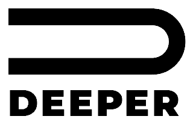

AI 회사의 모델은 누구나 빌려 쓸 수 있습니다. 하지만 대표님의 경험과 판단과 기록은
대표님 컴퓨터 안에 있어야 대표님의 것입니다. 이 한 장이 그 집을 짓는 법입니다.
와이 콤비네이터 대표 개리 탄은 2026년 8월 스타트업 스쿨 강연 「Personal AGI Is How You Stay Under Your Own Power」에서 이렇게 정리했습니다. 개인용 AGI는 셋으로 이루어진다. 빌려 쓰는 최신 AI 모델, 내가 소유한 나의 기록, 그리고 그 둘을 이어 일하게 하는 손. 모델은 누구나 같은 값을 내고 빌립니다. 차이는 내가 쌓아 둔 기록에서 납니다.
| 셋 | 겨자씨 OS에서는 |
|---|---|
| 빌려 쓰는 모델 | Claude 구독. 대표님 이름으로 로그인하고, 비밀번호는 누구에게도 알리지 않습니다. |
| 내가 소유한 기록 | C:\kingdombrain 한 폴더. 매일의 메모, 사업 카드, 결정과 그 까닭이 대표님 컴퓨터에 파일로 남습니다. 회사가 바뀌어도 폴더는 남습니다. |
| 일하게 하는 손 | 고슴도치·사막여우·전담팀·맥가이버·킹덤빌더. 그 폴더를 읽고 대표님의 맥락 안에서 일합니다. |
그래서 웹사이트의 챗봇이 아니라 컴퓨터 안의 폴더에 심습니다. 챗봇은 대화가 끝나면 잊습니다. 폴더는 어제 적은 한 줄을 내일의 AI가 다시 읽습니다. 쓸수록 대표님을 더 잘 아는 AI가 되고, 그 지능은 대표님 것입니다. 겨자씨라 부르는 까닭도 여기 있습니다. 작게 심어 두면 날마다 자랍니다.
참고 — Garry Tan, Startup School 2026 keynote (YouTube, 2026-08-06). 겨자씨 OS는 그 강연의 설계 원리를 따르되 그가 만든 도구를 쓰지는 않습니다. 사막여우·고슴도치는 DEEPER의 저작물입니다.
겨자씨 OS는 킹덤빌더 한 분의 컴퓨터에 심는 AI 운영 체계입니다. 폴더 하나에 기억 담당, 중심 담당, 일손, 정비사, 큐티 동반자를 함께 모십니다.
세컨브레인은 대표님의 기록과 자료와 결정을 한 폴더에 모아 두는 방식입니다. AI는 그 폴더를 읽고 대표님의 맥락 안에서 일합니다. 이 안내에서는 그 폴더를 기억의 집이라 부릅니다. 겨자씨 OS는 그 집에 킹덤브레인이라는 이름을 붙였습니다. 대표님이 오늘 남기신 한 줄을 내일의 에이전트가 읽고 이어서 일합니다.
중심은 고슴도치가 맡습니다. 고슴도치는 대표님의 정체성과 사업가로서의 철학, 신념, 삶의 태도를 운영원칙 한 장에 적습니다. 적는 말은 모두 대표님의 말입니다. 고슴도치는 모든 사업 판단을 그 한 장에 비춰 봅니다.
전담팀은 사업체마다 따로 섭니다. 각 팀은 맡은 사업 하나만 배가하고 확장합니다. 다른 사업체의 자료는 읽지 않습니다. 방향을 바꾸거나 보류하거나 넓히는 결정은 고슴도치가 운영원칙에 비춰 대표님께 가져옵니다.
대표님은 고슴도치에게 말씀하시면 됩니다. 고슴도치가 기억은 사막여우에게, 일은 전담팀에게, 세팅은 맥가이버에게 맡깁니다. 큐티는 킹덤빌더를 직접 부르십니다.
| 자리 | 이름 | 하는 일 | 부르는 말 |
|---|---|---|---|
| 기억 | 사막여우 | 데일리노트, 하루 한 질문, 한 주 별자리, 볼트 백업 | 안녕 |
| 중심 | 고슴도치 | 운영원칙과 사업 지도를 듭니다. 말을 받아 맞는 손에 맡깁니다. 경영실과 까미노도 엽니다 | 고슴도치 경영실 |
| 일손 | 전담팀 | 사업체마다 섭니다. 그 사업의 조사·제안·반복 절차를 맡습니다 | 팀의 이름 |
| 정비사 | 맥가이버 | 설치·복구·옵시디언·깃헙·새옷·새 에이전트 세팅 | 맥가이버 |
| 큐티 | 킹덤빌더 | HTM의 오늘 큐티 글을 먼저 띄웁니다. 이어서 한 절씩 필사·묵상·동행일지·중보로 이어 갑니다 | 킹덤빌더 |
이름과 호칭은 대표님이 정하십니다. 기본 호칭은 「대표님」입니다. 바꾸고 싶으시면 _겨자씨/이름표.md의 「지금」 칸을 고치고 「이름표 바꿨어」라고 말씀해 주세요. 맥가이버가 정의·명단·배차표·기억을 함께 옮깁니다. 이름이 바뀌어도 하는 일은 같습니다.
설치가 끝나면 컴퓨터에 이런 폴더가 섭니다. 매일 여는 폴더는 C:\kingdombrain 하나입니다. 옵시디언도 이 폴더를 볼트로 엽니다.
_고슴도치, 골방, _금고, _겨자씨/원본, 이름이 _민감_으로 시작하는 파일. .gitignore가 거릅니다._겨자씨는 설치 재료입니다. 새옷 때 다시 쓰니 지우지 않고 두시기를 권합니다.사업 아래에 그 사업체 폴더와 카드 한 장을 만듭니다.설치는 파일 하나를 두 번 눌러 시작합니다. 그다음 대화창에 프롬프트를 한 칸씩 붙입니다. ⓪으로 엽니다. ①부터 ⑤까지 다섯 칸을 지나 ⑥으로 점검합니다.
C:\kingdombrain 폴더를 만들고 받으신 꾸러미 zip을 그 안에 풉니다. 풀고 나면 바로 아래에 _겨자씨, .claude, CLAUDE.md, AGENTS.md, .gitignore가 보여야 합니다.kingdombrain\kingdombrain) 안쪽 내용을 바깥으로 옮겨 주세요.클로드 코드가 처음이시면 클로드 코드 설치와 Code 탭 Local 여는 법을 먼저 보시면 좋습니다.
C:\kingdombrain\_겨자씨\설치_시작.cmd를 두 번 눌러 주세요. 이 파일이 차례로 하는 일은 다음과 같습니다.
_고슴도치 폴더에 풉니다. 구역 이름은 「경영실」입니다._겨자씨\설치_상태.md에 적습니다.C:\kingdombrain을 엽니다.클로드가 점검 결과를 한 줄씩 알립니다. 「실패」 줄이 있으면 먼저 그 줄을 말합니다. 그 뒤로는 단계마다 설치를 돕는 분이 할 일을 짚어 줍니다.
세팅이 끝나면 한 번 불러 봅니다.
화면에 「스킬 실행됨 … desertfox」가 뜨고 오늘 데일리노트가 생기면 통과입니다.
세 줄을 받으면 이어서 붙입니다.
여권과 오늘 할 일 둘이 나오면 이어서 붙입니다.
이 칸이 가장 깁니다. 고슴도치는 운영원칙을 여섯 칸으로 여쭙습니다. 나는 누구인가, 사업가로서 믿는 것, 삶의 태도, 지킬 것, 하지 않을 것, 시작·멈춤 기준. 대표님이 하신 말 그대로 적습니다.
첫 전담팀은 본업에만, 셋까지 세웁니다. 마지막에 대표님이 첫 업무 결과를 보시고 「됐다」나 「아니다」로 답해 주세요. 그 한 마디를 팀이 기억합니다.
오늘의 큐티 글이 뜨면 이어서 붙입니다.
킹덤빌더는 골방이 깃헙 금고에 실리지 않는다고 한 줄 알려 드립니다.
이 칸 앞에는 대표님 손이 두 번 갑니다.
C:\kingdombrain을 고릅니다. 볼트 이름은 킹덤브레인입니다.gh auth login --web을 실행하면 브라우저가 열리고 여덟 자리 코드가 뜹니다. 코드 입력과 깃헙 로그인은 대표님이 브라우저에서 직접 하십니다. 비밀번호는 클로드에게 알리지 않습니다. 터미널은 열지 않습니다(이 흐름은 첫 설치 때 실측합니다).브라우저 흐름이 안 열리면 설치를 돕는 분이 터미널에서 같은 명령을 한 번 칩니다.
붙여넣는 곳 — Code 탭 대화창 · 폴더 C:\kingdombrain · 새 대화다섯 줄은 이렇게 옵니다. 여우 판, 고슴도치 판(운영원칙·사업 지도를 적었는지), 본업 전담팀 이름, 첫 업무 검수, 남은 것.
_겨자씨\프롬프트_붙여넣기.txt에도 있습니다. 중간에 끊기면 그 칸의 프롬프트를 다시 붙이시면 됩니다. 클로드는 이미 된 것을 건너뜁니다.| 누구에게 | 말 | 무엇이 열리나 |
|---|---|---|
| 사막여우 | 안녕 | 오늘 한 걸음(데일리노트) |
| 사막여우 | 오아시스 | 하루 한 질문 |
| 사막여우 | 밤하늘 | 한 주를 별자리 한 장으로 |
| 사막여우 | 백업 | 볼트를 깃헙 금고에 |
| 고슴도치 | 고슴도치 경영실 | 새 대화를 여는 말 · 여권과 오늘 할 일 둘 |
| 고슴도치 | 까미노 | 지금까지를 전부 남기기 |
| 고슴도치 | 저장해줘 | 백업·세이브·까미노 가운데 맞는 하나 |
| 고슴도치 | 주간 정비 | 일주일에 한 번, 배운 것 정리 |
| 맥가이버 | 새옷 입혀줘 · 새 에이전트 만들자 | 업데이트 · 역할 하나 세우기 |
| 킹덤빌더 | 킹덤빌더 · 큐티 하자 | 오늘의 큐티 글과 한 절씩 필사 |
「새옷」 한 마디만 하시면 사막여우가 자기 새옷을 봅니다. 셋을 다 보려면 「새옷 입혀줘」라고 말씀해 주세요. 누가 어떤 말을 받는지는 일터/_배차표.md에 있습니다.
대표는 고슴도치와 대화하며 경영한다. 고슴도치는 대표의 중심(정체성·철학·신념·삶의 태도)을 지키고, 전담팀이 사업체마다 일을 배가한다. 아침은 말씀으로, 기억은 여우에게, 일은 팀에게, 판단은 운영원칙에.
| 때 | 말 | 누가 | 남는 것 |
|---|---|---|---|
| 아침 처음 | 킹덤빌더 | 킹덤빌더 | HTM 오늘 큐티 글 링크, 한 절 필사, 묵상 한 마디, 중보 기도. 기록은 골방에(금고에 안 올라감) |
| 아침 | 안녕 | 사막여우 | 오늘 데일리노트와 한 걸음 |
| 아침 | 오아시스 | 사막여우 | 하루 한 질문(비우기)에 대한 대표님의 답 |
| 아침 | 냠냠 | 사막여우 | 아침 손글씨·메모(사진이나 글)를 여우가 읽고 볼트에 적은 기록 |
| 낮 | 고슴도치 경영실 | 고슴도치 → 전담팀 | 여권, 오늘 할 일 둘, 운영원칙에 비춘 판단 한 줄, 팀에 맡긴 일과 검수 한 줄 |
| 하루 끝 | 까미노 · 저장해줘 | 고슴도치 | 오늘 경영실 기록. 「저장해줘」면 맞는 저장 하나 |
아침. 대표님이 「킹덤빌더」라고 부르십니다. 킹덤빌더가 HTM의 오늘 #하나님의하루 글을 먼저 띄웁니다. 대표님은 한 절을 옮겨 적고 묵상 한 마디를 남기십니다. 그날 기도할 분이 있으면 중보 기도로 이어 갑니다. 이어서 「안녕」을 부르시면 사막여우가 오늘 데일리노트를 엽니다. 「오아시스」로 하루 한 질문에 답하십니다. 손으로 쓴 아침 메모가 있으면 사진을 찍어 「냠냠」과 함께 건네십니다.
낮. 대표님이 「고슴도치 경영실」을 여십니다. 고슴도치가 여권과 오늘 할 일 둘을 드립니다. 판단이 필요한 일에는 운영원칙 한 장의 어느 줄에 비춰 보았는지 한 줄로 밝힙니다. 사업체의 일은 대표님이 그 사업체 전담팀을 이름으로 직접 부르셔서 맡기십니다. 여러 사업체가 얽히거나 방향을 정할 일이면 고슴도치에게 가져가십니다. 결과를 받으시면 「됐다」나 「아니다」로 답해 주세요. 팀은 그 답을 다음 일의 기준으로 적어 둡니다.
저녁. 대표님이 「까미노」라고 하시면 고슴도치가 오늘 경영실 기록을 남깁니다. 무엇을 저장할지 고르기 어려우시면 「저장해줘」 한 마디로 충분합니다. 고슴도치가 백업·세이브·까미노 가운데 맞는 것을 고릅니다. 올라갈 파일 목록도 먼저 보여 드립니다.
| 때 | 말 | 누가 | 남는 것 |
|---|---|---|---|
| 주말 | 밤하늘 | 사막여우 | 한 주의 기록을 모은 별자리 한 장 |
| 주말 | 주간 정비 | 고슴도치 | 배운 것과 낡은 규칙의 정리. 대표님이 정할 일은 세 건 이하 |
| 한 달에 한 번 | 에이전트 회의 하자 | 사막여우 ↔ 전담팀 | 일터/_회의록/의 세 칸 — 여우의 브리핑, 총괄의 반영, 팀의 답례 |
첫 주에는 셋만 하셔도 됩니다. 아침 「안녕」 한 번, 하루 한 번 「고슴도치 경영실」, 전담팀에 일 한 건 맡기고 「됐다/아니다」.
킹덤빌더와 고슴도치가 기준으로 삼는 자료는 헤븐리터치 미니스트리(HTM)의 공식 자료입니다. HTM은 손기철 장로가 대표로 있는 초교파 선교 단체입니다. 공식 홈페이지는 스스로를 「말씀과 삶과 신앙이 일치되는 킹덤빌더를 세우고 세상으로 파송」하는 단체라고 소개합니다.
| 자료 | 무엇이 있나 |
|---|---|
| 인스타그램 heavenly_touch_m | 매일 묵상 시리즈 #하나님의하루. 킹덤빌더가 아침마다 여는 곳입니다 |
| 유튜브 @HTM0691 | 「손기철장로 말씀치유집회」 공식 채널. 매주 화요일 저녁 7시 30분 생중계 |
| 홈페이지 heavenlytouch.kr | HTM 소개와 화요 말씀치유집회 안내 |
| HTM 도서 목록 | 『말씀대로 말하라』(규장, 2019)를 비롯한 손기철 장로의 저서 |
킹덤빌더는 『말씀대로 말하라』의 공식 소개와 목차에서 확인된 원칙만 태도로 입습니다. 말보다 마음을 먼저 여쭙습니다. 말씀 구절은 바꾸지 않고 그대로 읽어 드립니다. 「긍정의 말로 바꾸세요」 같은 처방으로 줄이지 않습니다. 책 본문은 인용하지 않습니다.
설교를 인용할 때는 실제로 가져온 영상의 자막이나 설명에서만 합니다. 영상 제목과 회차를 함께 적습니다. 기억에서 끌어낸 설교 요약은 쓰지 않습니다. 기준 자료를 열지 못한 날은 「기준 자료를 열지 못해 제 말은 일반적인 묵상입니다」라고 먼저 밝힙니다.
고슴도치도 같은 기준 위에서 코칭합니다. 본업과 사람과 비전, 그리고 휴식의 리듬을 먼저 살핍니다. 확장은 그 위에 놓습니다. 기준 파일에서 확인된 문장만 기준으로 씁니다. 확인되지 않은 교리나 주장은 말하지 않습니다.
_겨자씨/기준/에 있습니다. HTM 자료를 통째로 내려받아 쌓지 않습니다. 링크로 찾아 필요할 때 한 편씩 엽니다. 인스타그램이 로그인 창을 띄우면 클로드는 로그인하지 않습니다. 로그인이 필요하면 대표님이 직접 하십니다.대표님은 고슴도치에게 이름과 맡길 일을 말씀하시면 됩니다. 고슴도치가 그 말을 맥가이버에게 넘깁니다. 맥가이버는 정의 파일부터 기억 자리·일지 자리·명단까지 짓습니다.
붙여넣는 곳 — Code 탭 대화창 · 폴더 C:\kingdombrain.claude/agents/<사업체>_<역할>.md. 기억 규율과 일지 규칙이 들어 있습니다.일터/_명단.md에 한 줄, 일터/_배차표.md에 한 줄.에이전트는 일을 마칠 때마다 배운 것을 정해진 자리에 적습니다. 대표님이 쓰실수록 다음 대화의 에이전트가 그 기록을 읽고 시작합니다. 이 순환을 학습 고리라고 부릅니다.
| 자리 | 누가 | 무엇을 |
|---|---|---|
| 각자의 기억 | 모든 에이전트 | 자기 기억 파일을 40줄 안으로 씁니다. 두 번 이상 통한 방법만 「굳은 규칙」으로 올립니다. 됐다고 적을 때는 무엇으로 확인했는지 함께 적습니다 |
일터/일지/ | 일한 에이전트 | 자기 일지는 자기가 씁니다. 남의 일지를 대신 쓰지 않습니다 |
일터/프롬프트_라이브러리.md | 팀 | 두 번 통한 방법을 모아 둡니다 |
일터/_하네스.md | 팀 | 결과물이 서랍에 들어가기 전 지나는 세 문 — 분류, 민감정보, 품질 |
| 주간 정비 | 고슴도치 | 민감정보 의심, 하네스 위반, 조건이 지난 규칙, 중복을 차례로 봅니다. 같은 교훈이 세 번이면 정의를 고칠 초안을 냅니다 |
| 에이전트 회의 | 사막여우·고슴도치·팀 | 일터/_회의록/에 세 칸 — 여우의 브리핑, 총괄의 반영, 팀의 답례 |
「저장해줘」 한 마디면 고슴도치가 셋 가운데 고릅니다. 올리기 전에는 올라갈 파일 목록을 보여 드립니다. 깃헙에 올라가지 않았으면 「백업 완료」라고 말하지 않습니다.
에이전트 회의는 「에이전트 회의 하자」로 엽니다. 사막여우는 「회의 브리핑」으로 자기 칸만 씁니다. 답례 칸에서는 사람 이름과 금액과 날짜를 걷어 냅니다.
_금고는 재정 장부와 계약과 개인정보 원본을 두는 자리입니다. 에이전트는 이 폴더의 위치만 기억하고 내용을 일지·기억·대화 요약에 옮겨 적지 않습니다. 필요한 숫자가 있으면 대표님이 그때 열어 알려 주십니다.
대표님이 확인하시기 전에는 에이전트가 바깥 상태를 바꾸지 못하게, 관문 스크립트가 다음 넷을 막습니다.
git push — 깃헙으로 내보내기git add -A — 무엇이 담기는지 모르는 채 담기git reset --hard — 작업물 되돌리기git clean -f — 파일 소리 없이 지우기깃헙에 올릴 때는 에이전트가 올라갈 파일 목록을 먼저 보여 드립니다. 대표님이 확인하시면 대화창에 느낌표로 시작하는 한 줄을 직접 넣으시도록 안내합니다. 관문은 파이썬 스크립트입니다. 파이썬이 없는 컴퓨터라면 설치 스크립트가 그 사실을 설치_상태.md에 적습니다. 맥가이버는 그 줄을 보고 파이썬 설치를 권합니다.
에이전트는 비밀번호·열쇠·토큰을 묻지도 넣지도 않습니다. 「터미널에 직접 쳐 주세요」라는 말을 들으시면 고장이 아니라 원칙입니다. 그 줄은 대표님이 직접 넣으십니다.
고객·교우·직원의 실명과 사정과 연락처는 파일에도 대화에도 넣지 않습니다. 중보명단에는 이름이 들어갑니다. 그래서 큐티 기록이 있는 골방은 깃헙 금고에 올라가지 않습니다.
돈을 보내는 일, 메일·문자를 보내는 일, 지우는 일은 에이전트가 하지 않습니다. 초안까지 만들고 보내는 손은 대표님입니다.
같은 폴더를 코덱스(Codex)에서 여셔도 됩니다. 루트의 AGENTS.md는 CLAUDE.md와 내용이 같은 코덱스용 규칙입니다.
.claude/agents의 정의 파일을 역할 문서로 읽고 그 역할로 답합니다..agents/skills에서 읽습니다. 이 폴더는 .claude/skills와 연결되어 있습니다.매일 쓰시는 자리는 클로드 데스크톱 앱 Code 탭을 기본으로 권합니다. 설치와 점검도 Code 탭 기준으로 짜여 있습니다.
새 판을 받는 일을 새옷이라 부릅니다. 루트에서 「새옷 입혀줘」라고 말씀하시면 맥가이버가 셋을 차례로 보고 결과를 따로 한 줄씩 알립니다. 하나가 막혀도 나머지는 끝까지 갑니다.
| 갈래 | 맥가이버가 보는 것 | 지금 |
|---|---|---|
| 사막여우 | 플러그인 판 번호 | 처음에는 꾸러미 안 사본입니다. 열쇠 꾸러미를 받아 열쇠_넣기.cmd를 두 번 누르면 그 뒤로는 온라인으로 새 판을 받습니다 |
| 고슴도치 | _고슴도치의 판 번호 | 같은 열쇠 꾸러미 안 새옷_시작.cmd를 한 번 두 번 누르면 그 뒤로는 「새옷 입혀줘」로 받습니다 |
| 겨자씨 층 | 정의·스킬·템플릿 파일을 설치 기록과 대조 | 대표님이 고친 파일은 덮지 않습니다. 새 판은 그 곁에 .new로 둡니다 |
열쇠 꾸러미는 설치를 도운 분이 대표님 한 분에게만 드립니다. 다른 분께 보내지 않고, 받은 zip은 쓰고 나서 지웁니다. 겨자씨 층의 새 판은 새 꾸러미로 드립니다. 받으시면 _겨자씨 폴더의 새옷_함께입기.cmd를 두 번 누르시거나 「새옷 입혀줘」라고 말씀해 주세요. 끝나면 클로드 앱을 껐다 켜고 새 대화를 여십시오.
_겨자씨 폴더의 고슴도치_시작.cmd를 두 번 누르세요. 남은 단계부터 이어 갑니다.| 이럴 때 | 먼저 볼 것 |
|---|---|
| 사막여우가 안 깨어납니다 | 화면에 「스킬 실행됨 … desertfox」가 뜨는지. 안 뜨면 플러그인이 안 올라온 것입니다 |
| 에이전트 이름을 불러도 반응이 없습니다 | 클로드 코드를 C:\kingdombrain에서 열었는지 |
| 판이 옛것 같습니다 | 플러그인의 plugin.json 안 version. 폴더 이름은 판 번호가 아닙니다 |
| 관문이 아무것도 막지 않습니다 | 파이썬이 깔려 있는지 |
고슴도치에게 사업체 이름을 말씀해 주세요. 고슴도치가 사업 폴더에 카드 한 장을 만들고 사업 지도에 한 줄을 더합니다. 그 사업의 전담팀은 「새 에이전트 만들자」로 세웁니다. 새 팀은 그 사업만 맡습니다.
고장이 아닙니다. 비밀번호나 열쇠가 든 줄은 에이전트가 대신 넣지 않습니다. 안내받은 그 줄만 대표님이 직접 넣으시면 됩니다.
「저장해줘」 한 마디면 충분합니다. 고슴도치가 맞는 것을 고릅니다. 둘 이상이 겹치면 한 번 여쭙습니다. 결과는 기록·커밋·올리기 세 줄로 따로 알려 드립니다.
인스타그램이 로그인 창을 띄운 날입니다. 킹덤빌더는 글을 지어내지 않고 링크를 드립니다. 링크를 눌러 직접 보신 뒤 「첫 절부터 한 절씩 띄워 주세요」라고 이어 가시면 됩니다.
네. 옵시디언이 C:\kingdombrain을 볼트로 열기 때문에 데일리노트, 운영원칙, 사업 카드, 에이전트 정의를 모두 옵시디언에서 읽고 고치실 수 있습니다.